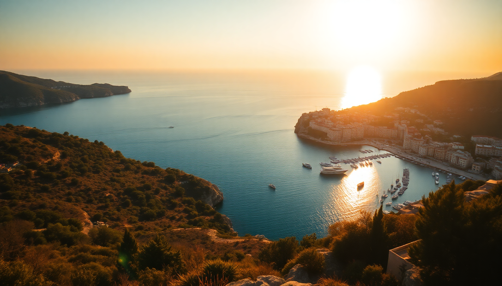

Best Beaches in Croatia: Dubrovnik, Split & Hvar Guide

I spent two weeks island-hopping along the Dalmatian coast last summer, and one thing became clear fast: not every “beach” in Croatia is what you picture. Some are concrete slabs with ladders, others are pebbly coves you need water shoes for. This guide covers where I actually swam—and where I’d skip—around Dubrovnik, Split, Hvar, and Zadar.
What are the best beaches in Dubrovnik?
Dubrovnik’s Old City is stunning, but the beaches inside the walls are mostly tiny, packed, and rocky. I’d rather take a 15-minute bus ride for a proper swim.
Banje Beach is the most famous—right under the city walls. It’s a pebble beach with clear water, but it gets shoulder-to-shoulder by 10 AM. The bar plays loud music, and sunbeds cost €30. Fine for a quick dip, but not a full-day spot.
I preferred Sveti Jakov Beach, a 20-minute walk from the Old City down a steep set of stairs. The view of the Old City from the water is better than from the walls. It’s pebbly, so bring water shoes. There’s a small bar, but no big crowds.
- Banje Beach – closest to Old City, busy, pricey sunbeds
- Sveti Jakov Beach – quieter, better views, bring water shoes
- Lokrum Island – 15-minute ferry from the Old Port; nude-friendly and rocky, but the botanical garden makes it worth the trip
For lunch near Sveti Jakov, walk up to Konoba Dubrava in the Bosanka neighborhood. Their grilled squid and homemade bread are solid, and prices are half what you’d pay inside the walls.
Where should I swim in Split?
Split’s beaches are more varied than Dubrovnik’s. The city’s main beach, Bačvice, is a shallow sandy bay—rare for Croatia. It’s packed with families and teenagers playing picigin (a local handball game in the shallows). Fine for an hour, but not my favorite.
I stayed at Hotel Vestibul Palace right inside Diocletian’s Palace, and the staff pointed me to Kašjuni Beach in the Marjan Forest Park. It’s a 30-minute walk from the Riva promenade, through pine trees and past old chapels. The water is deep and clear right off the pebbles, and the Kašjuni Beach Bar serves cold Karlovačko beer and decent burgers.
- Bačvice – sandy, shallow, good for kids, very crowded
- Kašjuni Beach – pebbly, clear water, quieter, in Marjan Forest Park
- Bene Beach – next to Kašjuni, more family-oriented, has a small playground
If you’re hungry after swimming, walk back toward the Riva and stop at Konoba Marjan on Senjska Street. Their black risotto with cuttlefish is the best I ate on the coast.
What are the best beaches in Hvar?
Hvar town is glamorous, but the beaches near town are mostly concrete sunbathing platforms. I rented a scooter from Miki Rent near the ferry port for €25 a day and headed west.
Dubovica Beach is the one you see in photos—a white pebble cove with turquoise water and an old stone house on the shore. It’s a 10-minute drive from Hvar town, then a steep 5-minute walk down. Go early (before 9 AM) or you’ll be fighting for towel space. The Dubovica Beach Bar does good iced coffee and simple sandwiches.
Mekićevica Beach is a quieter alternative, just a 5-minute walk past Dubovica. Fewer people, same clear water, no bar—so bring your own snacks.
- Dubovica Beach – iconic cove, gets packed, go early
- Mekićevica Beach – quiet neighbor, no facilities
- Palmizana Beach – on the Pakleni Islands, a 20-minute water taxi from Hvar; sandy coves, beach clubs, and good snorkeling
For lunch on Hvar, skip the tourist traps on the main square. Walk to Konoba Menego on the hill behind the cathedral. The owner runs it like a family tavern, and the peka (slow-baked veal under a bell) needs to be ordered a day ahead—do it.
Are there good beaches in Zadar?
Zadar surprised me. It’s not as famous for beaches as Dubrovnik or Hvar, but the coastline north and south of the city has some of the most relaxed swimming spots I found.
Kolovare Beach is the city beach, right off the promenade. It’s concrete and pebbles, with a few bars and a playground. Fine for a quick swim after visiting the Sea Organ, but not a destination.
I rented a bike from Zadar Bike and rode 20 minutes north to Punta Skala Beach in the Borik neighborhood. It’s a long pebble beach with pine trees providing shade. The water is shallow and warm, and there’s a small kiosk selling grilled corn and beer.
- Kolovare Beach – city beach, convenient, concrete
- Punta Skala – pebbly, shaded, good for families
- Sakarun Beach – on Dugi Otok island, 1.5 hours by ferry from Zadar; one of the most beautiful beaches in Croatia, white sand and shallow turquoise water
If you take the ferry to Sakarun, grab lunch at Konoba Kod Dade in the village of Božava. The grilled fish is caught that morning, and they serve it with Swiss chard and potatoes.
When is the best time to visit these beaches?
June and September are the sweet spots. July and August bring crowds, heat, and higher prices. I visited in mid-September, and the water was still 24°C, the sunbeds were free, and restaurants didn’t need reservations.
- June – warm water, fewer tourists, lower prices
- July–August – peak season, everything crowded, book ahead
- September – best balance of weather and crowds
FAQ
Do I need water shoes for Croatian beaches? Yes, for most of them. Natural beaches in Croatia are pebble or rock, not sand. Banje, Sveti Jakov, Kašjuni, and Dubovica all have sharp stones. A cheap pair of water shoes from Decathlon saved my feet.
Are there sandy beaches in Croatia? A few. Bačvice in Split has sand, and Sakarun on Dugi Otok has white sand. Most other beaches are pebble or concrete. If sand is a dealbreaker, stick to those two.
Can I swim in Hvar town itself? You can, but it’s not great. The swimming platforms near the Hvar harbor are fine for a quick dip, but the water gets boat traffic. Take a water taxi to the Pakleni Islands instead—Palmizana Beach is 15 minutes away and much nicer.
Conclusion
- Dubrovnik: skip Banje for Sveti Jakov or Lokrum Island
- Split: Kašjuni Beach in Marjan Park beats Bačvice every time
- Hvar: rent a scooter and hit Dubovica early, or take a water taxi to Palmizana
- Zadar: Punta Skala is solid, but Sakarun on Dugi Otok is worth the ferry ride
- Water shoes: buy them before you go
- Best months: June or September for fewer crowds and warm water